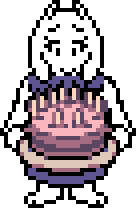
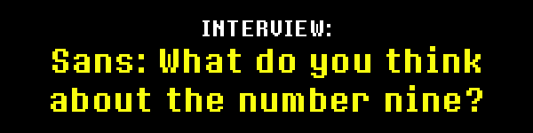
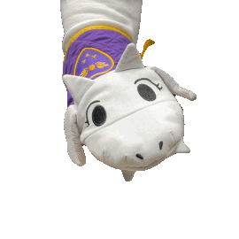
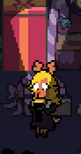
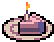

 |
Happy 9th Anniversary to UNDERTALE! |
 |
That means it's been |
Here's to another |
 |
 |
It has nothing to do with the number 9, but... |
This year, Fangamer is putting out a special line of kitchen-related products!! They made a special video to promote it! |
You can use it every day. |
|
I asked for this... |
You can get your own weird-yet-cute Toriel to use as an oven mitt! She's a bit flat, but apparently stuffing her snout with more fluff would've increased her flammability…* |
Feel free to use her as a puppet. Actually, that might be her best use… |
* … Seriously, we looked at another company's "character head as oven mitt" product, and it actually isn't legally an oven mitt. You know, because it's too flammable... |
That's right! Fill the mug with milk or another opaque liquid, drink it... And reveal the dog sitting inside! |
This was another request from me... I had a similar cup as a child. It had some sort of creature at the bottom, and you wouldn't get to see it until you drunk almost everything. |
Try serving hot chocolate or something to people that have never seen it before! Or, use the hidden dog as a motivator to get someone to drink some terrible medicine. Since it’s not clear if the dog has any concept of good and evil, it is unaware of the effects caused when it is used in this way. |
Alternately, you can fill it with one of those chocolate cakes that's supposed to look like dirt and "excavate" the dog with small spoons. … then you can bury it again... |
With this plate, you can imagine you're a customer at the exclusive Papyrus Collaboration Café!! |
... I'm not sure if the food would actually taste good... |
Certain parts are transparent, so different liquids turn his eye different colors! |
... As a result, if you make anything other than blue lemonade, he's basically going to turn into an AU version of Sans… please be responsible. |
It's the perfect dish to make your favorite dessert. |
Reader, you know I'm talking about talking about Butterscotch Pie. |
It would be so delicious, won't you make some for us? |
|
What a cute apron! It's easy to see what's appealing about it... |
Huh, what did you say, Reader!? |
"Yeah, it looks like the Trif*rce!" |
... Guess I should've expected that from a lower-tier subscriber... |


|
Sans and Papyrus salt & pepper shakers! They will be available in 2025. This idea was suggested by Everdraed. |
"S&P"... naming-wise, it's kind of perfect. |
Anyway, you might already have salt and pepper shakers, so how about using them for other types of powders!? For example, the ketchup chip flavoring powder from some Canadian factory. Or, powdered milk. Or, bonemeal. The list of great ideas goes on. |
 |

Last time, I explained everything left required to release Chapter 3 & 4. |
If you missed it, the information is here. |
By the way, regarding testing Chapter 1+2 with the new GameMaker function - we are waiting on the GameMaker team to help out with some issues we've been having. It will take a little longer, but... when things are ready, we'll let everyone know on the official UNDERTALE Twitter! |
It's only been a month (I am writing this September 3rd), but let's quickly review what has been done in that time. |
|
As mentioned before, Chapter 3's main content was completed a while ago. |
Chapter 3's Japanese translation is currently in the checking phase. 8-4 (localization company) is going through the game carefully to determine that all of the lines display correctly in Japanese. This process should be completed by the beginning of October. |
We are hoping to begin professional testing of the PC version in mid-October. |

 |
We met our internal deadline to complete Chapter 3&4's main content, which was September 1st. |
With that, Chapter 4's PC version is essentially complete, minus some bugfixes and the Japanese localization. |
A preliminary pass of Chapter 4's translation is now being worked on. I expect this first pass will be finished at the time we send out the next newsletter. After that, would come additional passes, and then checking (like Chapter 3 is undergoing now). |
By the way, some more people were able to play Chapter 4. I've seen people play it 6 times now. Everyone liked it. Watching it now, it feels really complete! |
|
Anyone not working on localization, console porting, or fixes, is now working on Chapter 5. This will be the main focus for us moving forward. |
I'm really excited to see this Chapter get made! |

Regarding Chapter 3&4's development, I have personally completed everything I can actively do for it. Now, all I can do is wait for localization and testing. |
... Getting to this point, and then having to wait... it feels like I'm strapped to a chair with delicious food just out of my reach. |
But, they exist! Chapter 3 and 4 are real! Now, it's just a matter of time! |
|

Although it's technically UNDERTALE's anniversary, I consider this day to be a celebration of DELTARUNE, as well. Sorry guys, you have to share a birthday party this year… |
Since it's been a while since Chapter 2's release, please allow me to share some materials from its development! I hope you enjoy it! |
|

Thank you very much to everyone still reading these letters. |
These letters are happy to still be read… |
Are you happy reading them? |
Here's a letter. It's not this letter, but you can still read it. |
... But, did it make you happy to read it? |
See you this year, and next year. |
Bye-bye. |
 |